Unbinned unfolding of MINERvA inclusive scattering data
Learn weights on events instead of filling a response matrix — recover the published result, then open new dimensions.
Joseph Bailey·Stanford undergrad researcher·July 16, 2026
Framing
What I'll show you, in order
Teach the core OmniFold idea — in the language of the unfolding you already do.
It is a strict generalization of D'Agostini IBU, not a replacement dogma.
Show it reproduces your published ME FHC CC-inclusive d²σ/(dpT dp∥).
Same public data product, independently rebuilt machinery — the trust anchor comes first.
Then show what event-level unfolding unlocks: dimensions that were hard to measure together.
Eavail, q₃, W opened as new axes on the same unfolded events.
The problem
Binned unfolding hits a dimensionality wall
The problem
Thirty measurements, none above two dimensions
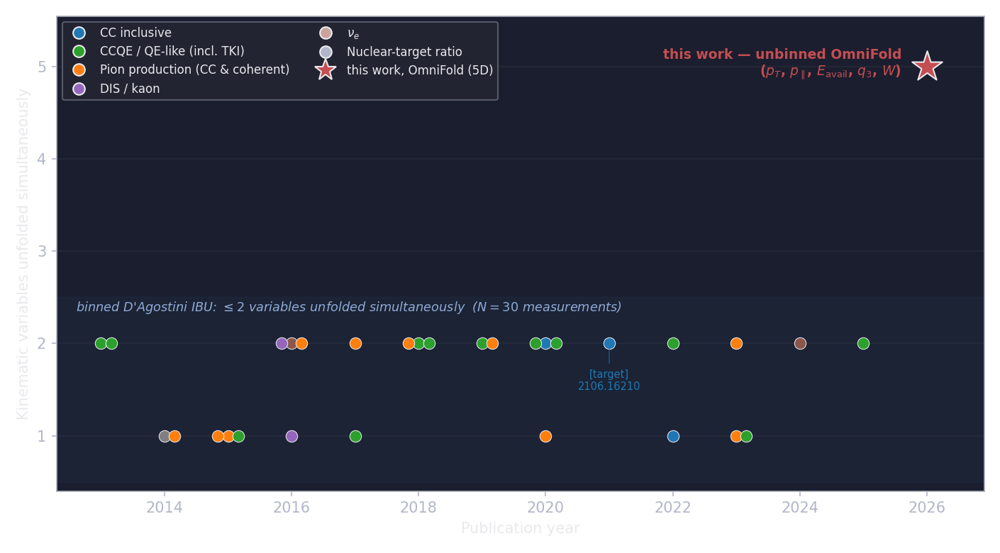
Every published MINERvA differential cross section uses binned D'Agostini IBU and stops at two simultaneous variables. The events were never the problem — the bins were.
The method
The response matrix, before it was histogrammed
As it's usually drawn
Truth bins on one side, reco bins on the other, arrows weighted by migration probability. D'Agostini IBU iterates Bayes' theorem on this matrix — the method behind every MINERvA cross section.
What it actually is
Just paired (truth, reco) simulated events, histogrammed. The pairing carries all the physics; the histogram only compresses it. Unfolding = deciding how much each simulated event should count.
The method
The only ML ingredient: a classifier as a ratio estimator
Train data vs. simulation at point x, class-normalized
w(x) =p(data | x)1 − p(data | x)
Indistinguishable here → w ≈ 1
Data-rich region → w > 1
Simulation-heavy region → w < 1
The method
One iteration: reweight, then pull back
The method
Why this is not a black box
Feed OmniFold binned inputs and it reduces exactly to D'Agostini IBU.
A strict generalization of the method MINERvA already uses — with the histogram removed.
The learned weights come from gradient-boosted decision trees.
Deliberately simple and robust; cross-checked against a neural network (backup).
Backgrounds, fakes, misses and efficiency are handled the same way you handle them.
Details and validation figures in backup.
The method
Adding an observable is adding a column
Binned: bins multiply
Each new dimension multiplies the response matrix: 2 → 4 → 8 → … cells, each needing its own migration statistics. The binning is frozen before the unfold and can never be revisited.
Unbinned: columns add
Each new observable is one more input column on the same events. The unfolded result is a weighted event sample — choose bins, and even observables, after unfolding.
Trust anchor
Same data, same answer as the published analysis
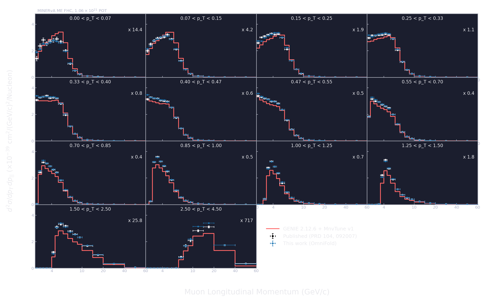
1.011total σ, OmniFold / published
1.006median per-bin ratio
94.1%of reported bins within 10%
Unbinned unfold of d²σ/(dpT dp∥), binned at the very end into the published binning — overlaid on the published points (PRD 104, 092007).
Trust anchor
Sub-1σ pulls — and the full-covariance picture
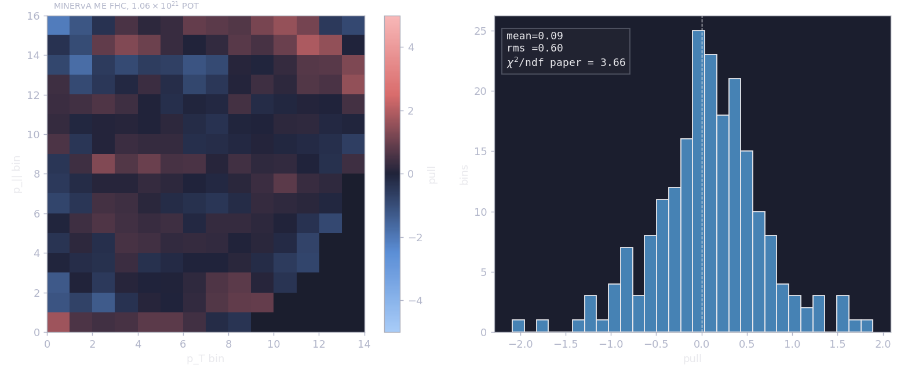
Per-bin pulls vs the published result: mean 0.09, rms 0.60 — no structure across the plane. Against the paper's full covariance, χ²/ndf = 3.66: correlated shape modes on the low-pT ridge, not normalization; 1.48 with the combined covariance (anatomy in backup).
Trust anchor
The uncertainty budget, rebuilt from scratch
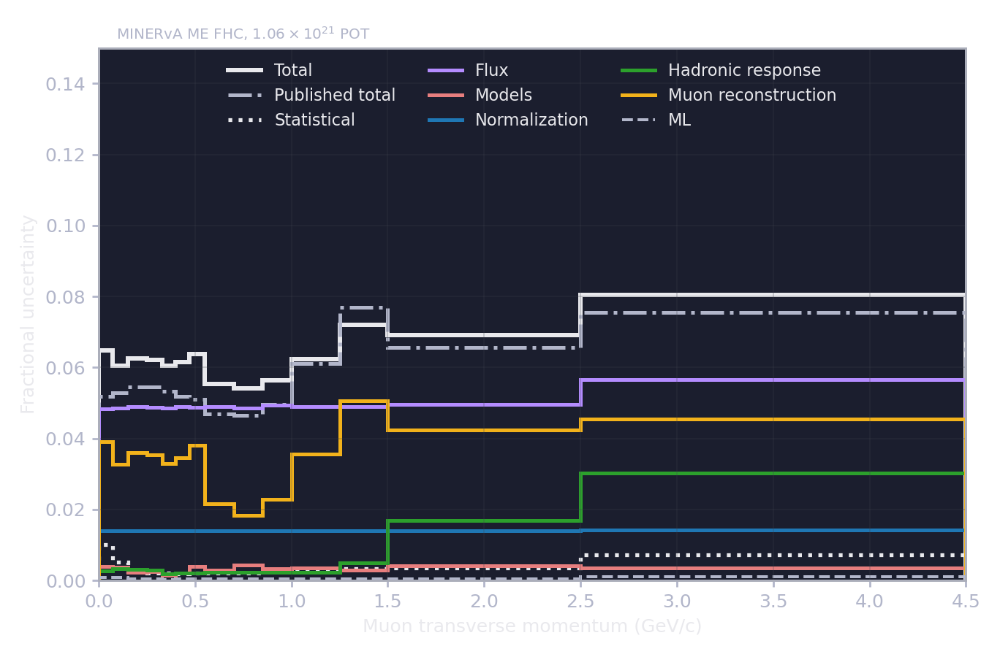
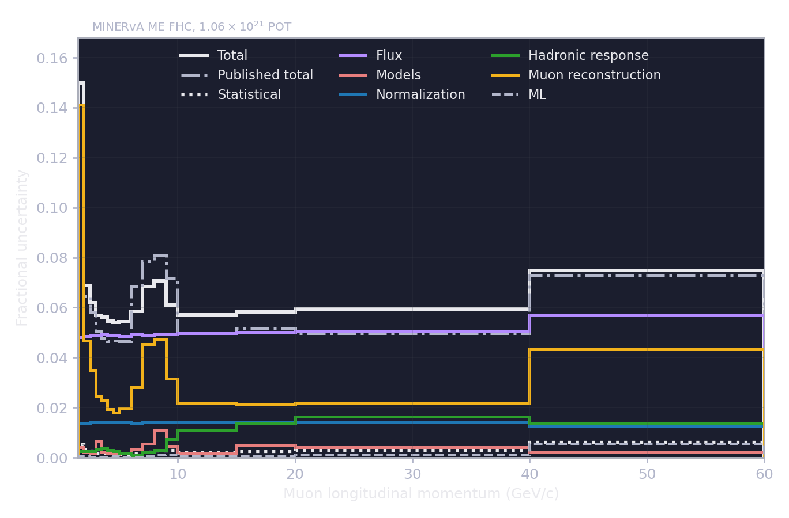
Flux, detector and model universes propagated through the unfold independently — median per-bin uncertainty 6.87% vs the published 6.86%. The ML contribution rides at the bottom.
Trust anchor
Try to break it before trusting it
ClosurePASStruth reweights, hidden resolution variable, alternate model — all recovered
Coverage68.7%200-toy interval coverage vs the 68.27% Gaussian target
Iterations 5 → 100.026%change in total σ when the iteration count doubles
Binned limit= IBUwith binned inputs the update reduces to D'Agostini
Bottom lineAUC 0.501a fresh classifier can no longer separate unfolded from target (p = 0.17)
New dimensions
Every new dimension carries its own cross-check
New dimensions
The 5D unfold reproduces the 2D anchor
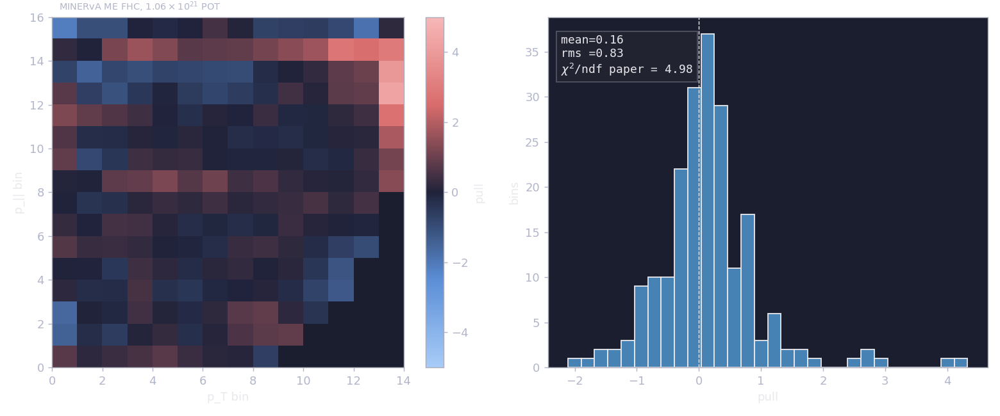
Same events, more columns — a simultaneous 5D unfold (pT, p∥, Eavail, q₃, W). Marginalized back down, it reproduces the 2D anchor.
New dimensions
Re-finding MINERvA's own low-recoil physics
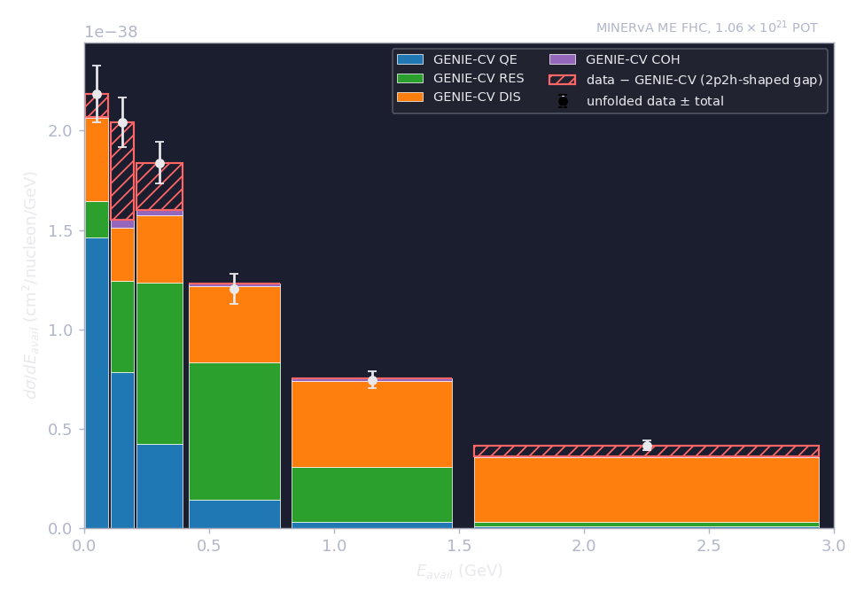
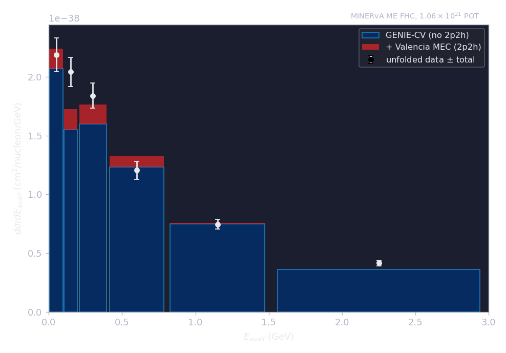
The unfolded Eavail spectrum re-finds the low-recoil excess: Valencia 2p2h fills the dip between QE and Δ. Your established result, recovered by a completely different method.
New dimensions
Shape-level only
A broad 1D discrepancy, resolved by one more axis
New dimensions
Shape-level only
A residual excess localizes at high Eavail and high W
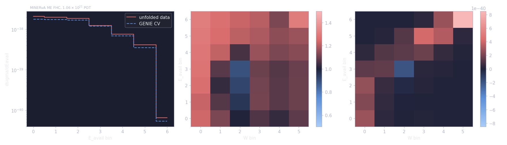
All four generators (GENIE MnvTune, bare GENIE, NuWro, GiBUU) underpredict the high-Eavail, high-W corner. Significance withheld pending corrected uncertainty production.
Outlook · 1 of 2
Toward unfolding raw detector data
A point-cloud transformer unfolds straight from reconstructed calorimeter clusters — toward raw-ish detector data rather than hand-built summary observables. Outlook, not a finished precision result.
Outlook · 2 of 2
Extending to the full muon phase space
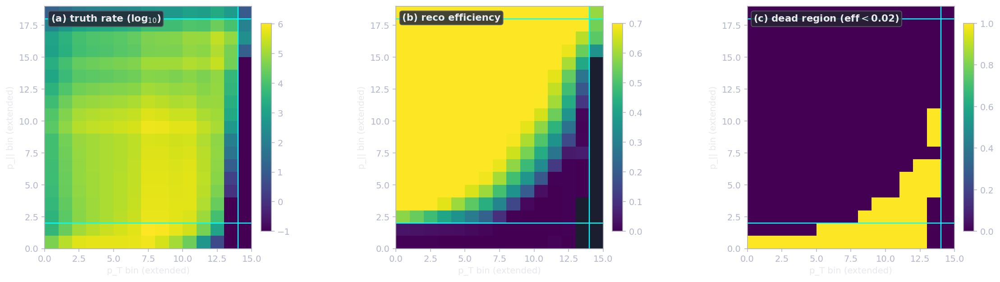
Removing the muon cuts opens the full phase space — truth rate, reconstruction efficiency, and the previously-cut dead region. Outlook, not a finished precision result (pilot in backup B10).
Summary
Learn weights on events, not bins
OmniFold is your unfolding with the histogram removed — it reduces to D'Agostini IBU.
It reproduces your published 2D result, with an independently rebuilt uncertainty budget.
The same events then open Eavail, q₃ and W — recovering your low-recoil physics and localizing a residual excess in the DIS corner.
The ask: which projections would the collaboration most want, and what validation would you require at publication level?
B
Backup
Method details, validation suite, and uncertainty status — one topic per slide.
Backup 1 · Algorithm
The OmniFold iteration, precisely
Step 1 — at reco level, train a classifier to separate data from (current-weight) simulation.
Its output estimates the likelihood ratio data/simulation — the per-event reco weight ω.
Step 2 — at truth level, train a second classifier to turn the pulled-back weights into a function of truth variables only.
This gives the truth-level weight ν — a proper reweighting of the generator prior.
Iterate: ν seeds the next pass. With binned inputs this is exactly D'Agostini IBU.
Full derivation and notation in the OmniFold primer.
Backup 1b · From the open data product to a cross section
Four event trees preserve the analysis logic
data (4.1M selected events) · mc_background · mc_signal_reco (paired reco+truth) · mc_truth_denom (32.8M, authoritative).
Truth-only events enter as native misses; 12 ME playlists run separately, then merge.
Step-1 target: phase-space data with a non-negative per-bin purity weight (data − background)/data.
An explicitly unbinned negative-weight subtraction reproduces it (backup B2).
d²σ = Σ wpush·wtruth / (Φ · NPOT · Nnucleons · ΔpT · Δp∥) per bin.
Misses make the truth ensemble acceptance-corrected: completeness = 1, no second efficiency division.
Backup 2 · Backgrounds, fakes, misses, efficiency
The same bookkeeping you already do
Left: background subtraction via negative weights, validated against purity. Right: the efficiency map entering the cross-section extraction.
Backup 3 · Classifier cross-check & migrations
A neural-net cross-check agrees; migrations understood
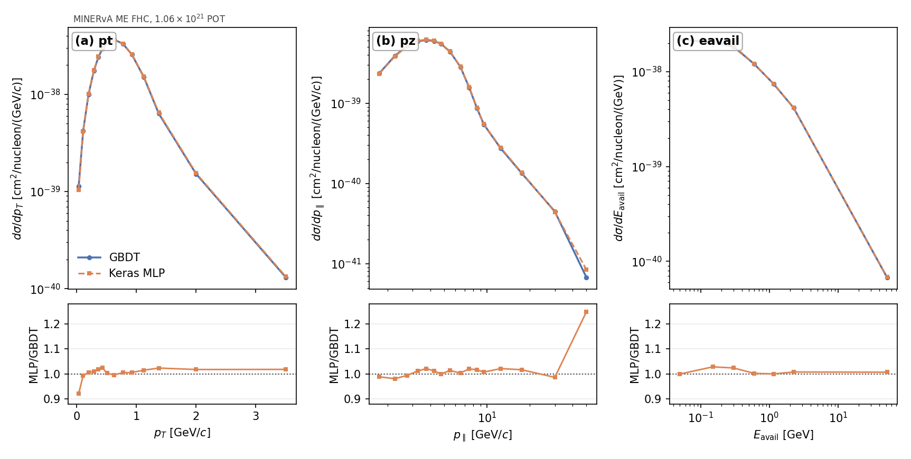
Left: an independent full Keras MLP reproduces the GBDT unfolded cross section (total-σ ratio 1.0078) — the result does not depend on the classifier family. Right: migration and resolution for all five unfolded observables.
Backup 4 · Regularization
Iteration count and classifier capacity
The iteration count plays the same regularizing role as in D'Agostini IBU.
Headline results use five iterations — the "5iter" in every figure name.
Classifier capacity (tree depth, count, learning rate) bounds how sharp a reweight can be learned.
Kept deliberately modest; the GBDT is robust where a deep network is not (see B3).
Stability is verified directly: seed and train-split scans, next slide.
Spread over independent trainings: sub-percent per bin in the bulk of the phase space, a few percent at the sparse edges.
Backup 6 · 2D covariance (cleared)
2D covariance structure
Correlation structure over the reported bins (left) and per-bin spread (right) — the 2D budget behind the uncertainty slide.
Backup 6b · Anatomy of the χ² = 3.66
Per-bin pulls and correlated shape are different questions
Per-bin pulls against the published σ: mean 0.089, rms 0.60 — every bin individually consistent.
Against the paper's full covariance: χ²/ndf = 3.66.
Driven by correlated shape modes along the low-pT peak ridge — not normalization (total σ ratio 1.011).
Against the combined (paper + this work) covariance: χ²/ndf = 1.48.
Full mode-by-mode anatomy in the analysis note's statistical-methods appendix.
Backup 7 · Uncertainty status
Uncertainty under regeneration — preliminary
What is cleared, what is being regenerated
Cleared: the full 2D uncertainty budget and covariance.
Independently rebuilt; matches the published budget (uncertainty slide, B6).
Being regenerated after a methodology fix: the 3D/4D/5D budgets and every covariance-based significance.
No Nσ is quoted for the high-Eavail/high-W excess anywhere in this talk.
Unaffected: central values, closure tests, marginalization cross-checks, and shape-level statements.
The excess localization is a central-value observation; its significance follows with the corrected production.
Backup 7 · Uncertainty status
Uncertainty under regeneration — preliminary
The (Eavail, W) band being regenerated
Uncertainty under regeneration — preliminary
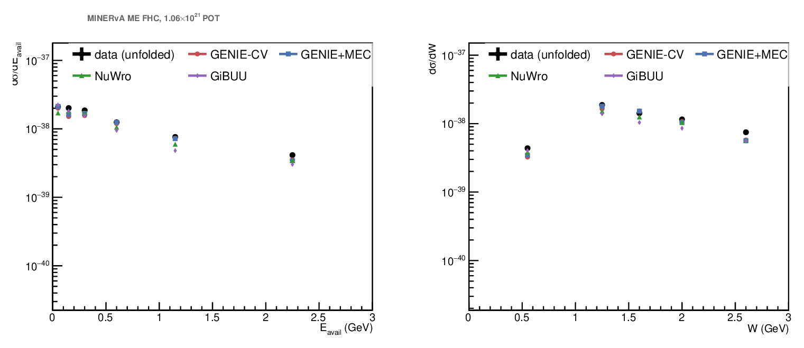
Shown for shape only — the band is preliminary and no numbers are quoted from this figure.
Backup 8 · 5D controls (central values)
Control distributions across all five axes
Reco-level control: data/MC in each axis (left), and the correlation structure MC vs data (right) — rMC ≈ rdata in every pair.
Backup 9 · Point-cloud transformer
PET inputs and central-value cross-check
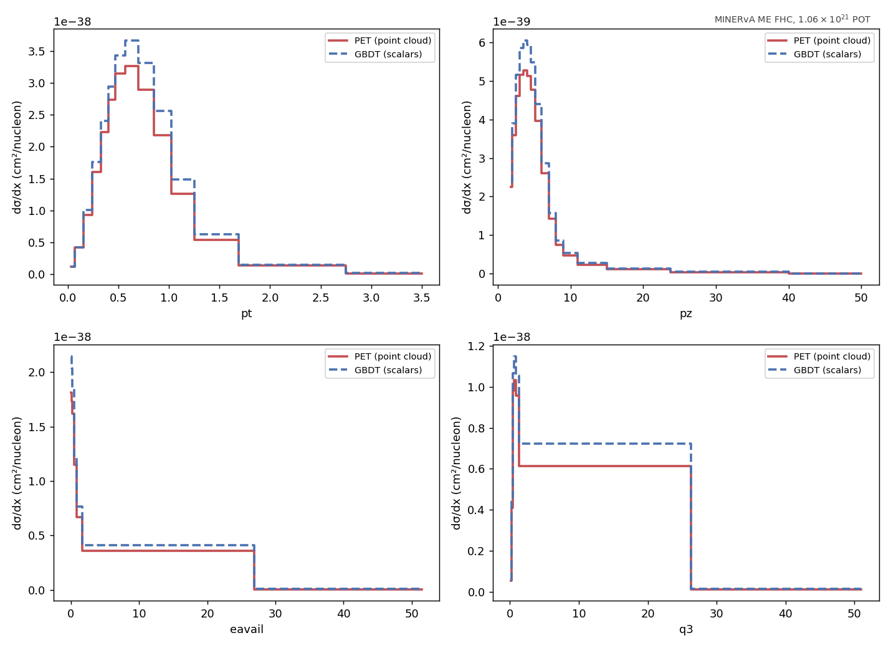
Left: cloud cardinality, truth vs reco, capped at 12 points. Right: PET vs GBDT central values agree; the precision comparison awaits the corrected uncertainty production.
Backup 10 · Full phase space (preliminary)
Preliminary
Removing the muon cuts: pilot study
PreliminaryPreliminary
The extrapolated region is prior-dominated by construction — the prior-swap envelope (left) bounds it honestly; the pilot tracks the restricted result where they overlap (right).